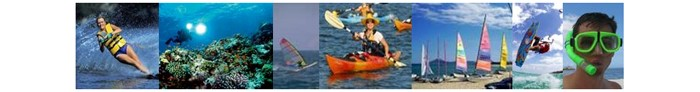
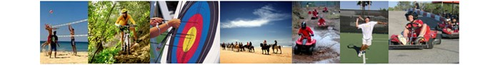

Sports
Golf

Golfing holidays in Cadiz Province on the Costa de la Luz, are truly enjoyable. This region is home to some of the most beautiful Golf Courses and Country Clubs. Many of the Golf Courses are either Championship Golf Courses playing host to large European tournaments, or are of Championship Golf standard.
The nearest golf course to the villa, Novo Sancti Petri, a 36 hole, par 72, championship course designed by Seve Ballesteros, which has stunning sea views, is only 5 minutes drive away. Melia Golf (18 hole, par 72) and Campano Golf (18 hole, par 72) are within a 10 minute drive from the villa.
Within 30 minutes drive you can also play at Sherry Golf Jerez (18 hole, par 72), Vista Hermosa Puerto Santa Maria (9 hole), Villa Nueva Golf Puerto Real (18 hole, par 72) and Golf el Puerto (18 hole, par 72) and less than an hour's drive away you will find at least a further 12 golf courses. You will be spoilt for choice!
Water Sports
This area offers ideal conditions for all water-sports; windsurfing, kite-surfing, sailing and scuba-diving are very popular and together with canoeing, water-skiing, surfing and snorkelling, a full range of water-sports is on offer.
Sports and Activities
Other sports and activities are varied and plentiful; try your hand at archery, quad-biking, horse-riding, tennis, mountain-biking, paint-balling, shooting or climbing. You will struggle to find an activity which is not available in this area.